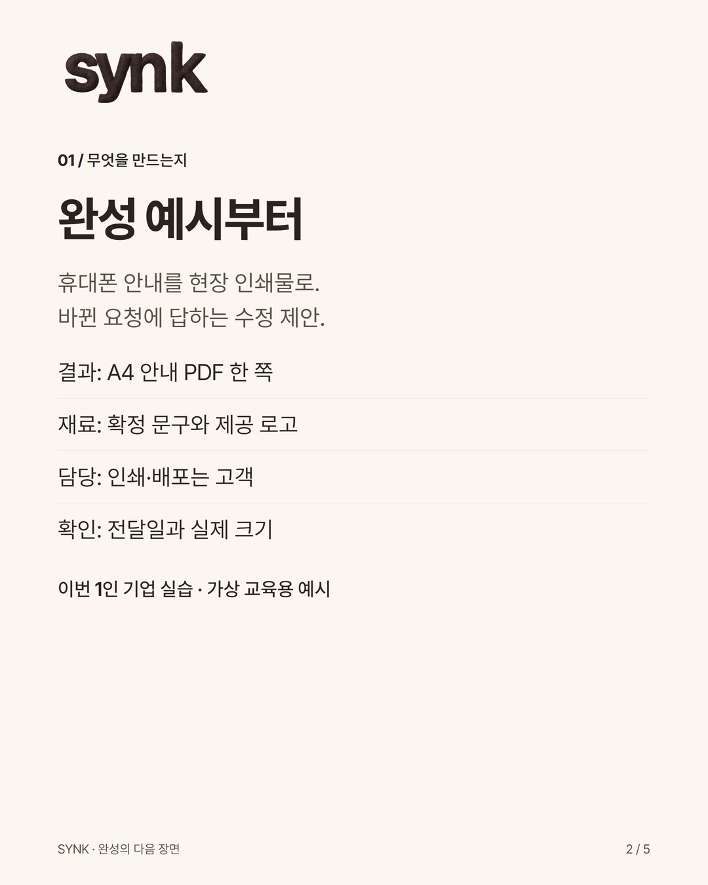
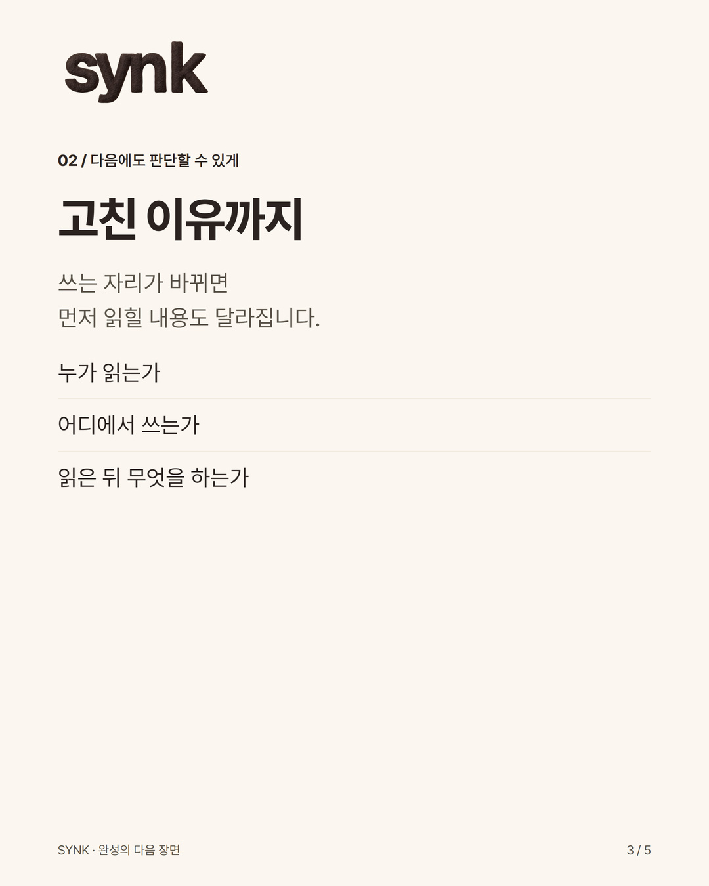
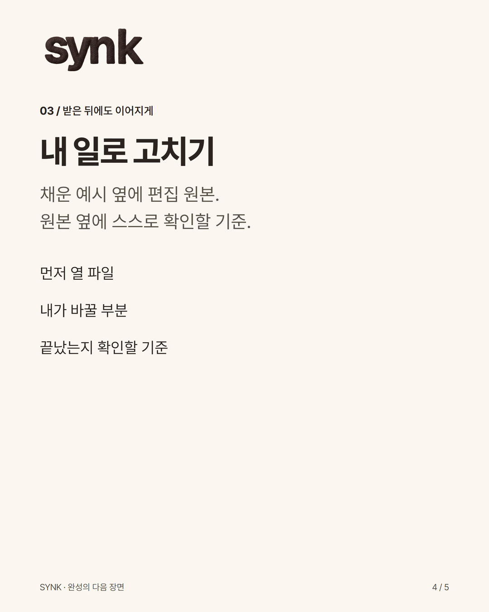

본체 Instagram 준비용
받은 사람이 쓸 수 있어야 완성
결과물을 쓰는 사람에게 건네는 네 가지 · 실제 제작 방식
신규 제작 · 본체 계정 개설 미확인 · 실제 SNS 미게시
게시할 문안
우리는 완성한 화면과 함께, 그다음에 쓸 방법을 건넵니다.
이번 1인 기업 실습에서는 휴대폰으로 볼 안내를 현장 인쇄물로 바꾸는 상황을 다뤘습니다. 가상 교육용 예시입니다.
1. 완성 예시를 먼저 봅니다. 무엇을 만들지 알 수 있습니다.
2. 바꾼 이유를 읽습니다. 사용처가 바뀌면 무엇을 다시 판단해야 하는지 알 수 있습니다.
3. 원본을 자기 일에 맞게 고칩니다. 빈 양식과 채운 예시를 함께 둡니다.
4. 확인 기준으로 다시 봅니다. 읽을 사람·사용처·받을 결과·남은 조건이 맞는지 살핍니다.
다음 자료를 건넬 때 이 네 줄을 복사해 써보세요.
• 먼저 열 파일:
• 내가 바꿀 부분:
• 끝났는지 확인할 기준:
• 아직 확인할 조건:
교육은 내 말이 되고, 방법은 내 일에 쓰이고, 작품은 내 시간 곁에 남도록. SYNK가 완성물을 만드는 기준입니다.
여러분이 자료를 받을 때 먼저 알고 싶은 것은 무엇인가요?
업로드할 카드


